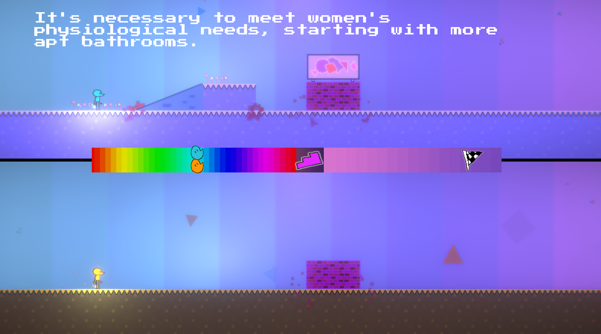
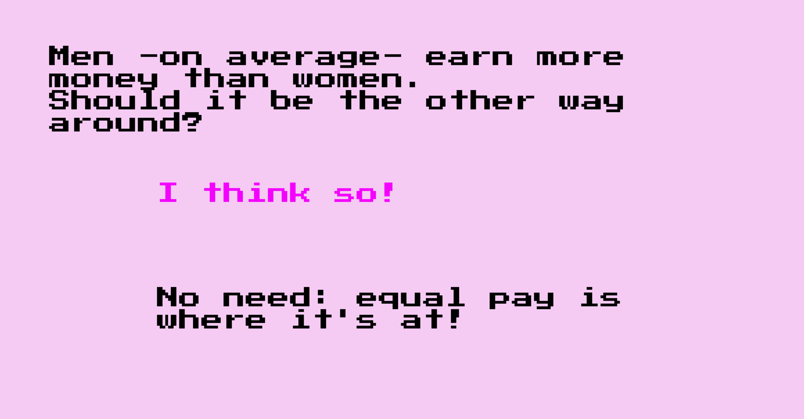

Overview

Orange is Our Favourite Colour is a Sidescrolling racing game in which the player controls two different characters: male and female, abstracted. The game main's theme is the difference between equality and equity, and how the latter one would be a better solution in our current society.
Progress

A very basic prototype alternates between a Q&A Phase and a Racing one. It needs fixing and polishing, but I think that the game's theme is expressed through its loop.
Inspired By:
TED talks about Gender inequity studies, Racing Games.